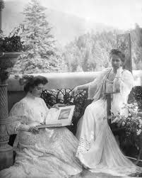
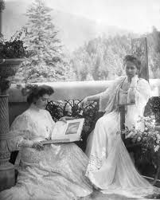

O Regină între două lumi

Cuplul Regal la încoronarea de la Alba Iulia (1922)
Venită din cețurile Angliei la doar 17 ani, Principesa Maria de Edinburgh a adus la București fastul curții britanice și rigiditatea imperială rusească a mamei sale. Căsătoria cu Principele Ferdinand a fost dificilă la început, însă Maria a înțeles rapid că destinul ei nu era să fie o simplă soție decorativă.
În timpul neutralității (1914-1916), ea a fost forța motrice din spatele deciziei României de a intra în război alături de Antantă, împotriva țării sale natale (Germania, prin Casa de Hohenzollern). Refuzând exilul în Rusia în timpul retragerii din Moldova, a devenit simbolul rezistenței naționale, fiind singurul bărbat adevărat al României, cum o numea ambasadorul Franței, Contele de Saint-Aulaire.
Misiunea Diplomatică: Paris 1919

Când Premierul Ion I.C. Brătianu a părăsit Conferința de Pace de la Paris, lovindu-se de refuzul Marilor Puteri de a recunoaște granițele României Mari, Regele Ferdinand a jucat ultima carte: Regina.
Sosirea ei la Paris a fost un triumf mediatic. Cazată la Hotel Ritz, Maria a început o ofensivă diplomatică bazată pe farmec personal și relații de rudenie. S-a întâlnit cu Președintele Woodrow Wilson (pe care l-a șocat vorbind despre dragoste și politică) și cu Georges Clemenceau, "Tigrul" politicii franceze.
Dialogul cu Clemenceau a rămas în istorie. Când acesta i-a reproșat că România cere "partea leului", Maria a răspuns dezarmant: "Tocmai de aceea am venit să vorbesc cu vărul meu, Leul." Datorită ei, România a păstrat Transilvania, Basarabia și Bucovina.
Cei Șase Copii și Destinele Lor

Carol al II-lea
Regele României (1930-1940)Primul născut. Relația cu mama sa a fost tumultuoasă, marcată de renunțările lui la tron pentru Zizi Lambrino și Elena Lupescu. A interzis-o pe Regină din viața politică după 1930.

Elisabeta
Regina GrecieiCea mai frumoasă, dar și cea mai enigmatică. Căsătorită cu Regele George al II-lea al Greciei, a divorțat ulterior și s-a retras în România, trăind o viață izolată.

Mignon (Maria)
Regina IugoslavieiNumită "Mignon" de mama sa. A devenit liantul Balcanilor prin căsătoria cu Regele Alexandru I al Iugoslaviei. A fost singura fiică care a dus o viață de regină exemplară până la capăt.

Nicolae
Principe RegentSufletul petrecerilor și pasionat de automobile. A condus Regența pentru nepotul său Mihai, dar a intrat în conflict dur cu fratele său, Carol II, fiind exilat.

Ileana
Arhiducesă de AustriaPreferata Reginei. A moștenit spiritul de sacrificiu și talentul literar. După exil, a devenit călugăriță în SUA sub numele de Maica Alexandra.

Mircea
Principe (1913-1916)Marea durere a Reginei. A murit de febră tifoidă la Buftea, în timp ce trupele germane se apropiau de București. Mormântul său a rămas mult timp în teritoriul ocupat.
Cercul de Aur: Prieteni și Confidenți
Barbu Știrbey - "Prințul Alb"
Administrator al Domeniilor Coroanei și sfetnicul de taină al cuplului regal. Influența sa politică a fost imensă, fiind omul de echilibru în momentele de criză. Zvonurile vremii îi atribuie paternitatea ultimilor copii, însă rolul său istoric este incontestabil.
Joe Boyle - "Salvatorul"
Colonelul canadian Joe Boyle a fost o figură romantică în viața Reginei. El a salvat o parte din Tezaur și arhivele românești din Rusia bolșevică și a organizat schimburi de prizonieri. Iubirea lor platonică i-a oferit Reginei sprijin moral în timpul refugiului de la Iași.
Martha Bibescu și Loie Fuller
Martha Bibescu (scriitoare) și Loie Fuller (dansatoare americană avangardistă) au completat latura artistică a Reginei, introducând-o în cercurile elitiste din Europa și SUA.
 

Averea, Bijuteriile și Testamentul
Regina Maria a fost o mare colecționară de artă și bijuterii. Deși a pierdut o mare parte din averea familiei Romanov (confiscată de bolșevici), ea a deținut piese fabuloase.
- Safirul Cartier: Unul dintre cele mai mari safire din lume (478 carate), cumpărat pentru ea de Regele Ferdinand în 1921.
- Coroana de Aur: Refuzând o coroană standard, a desenat-o singură în stil Art Nouveau, folosind aur transilvănean, inspirată de doamnele medievale române.
- Domeniul Balcic: "Tenha Juvah" (Cuibul Liniștit) a fost capodopera sa arhitecturală, un loc de suflet construit pe malul mării.

„Te binecuvântez, iubită Românie, țara bucuriilor și durerilor mele... Inima mea să fie așezată la Balcic, lângă marea cea mare.”